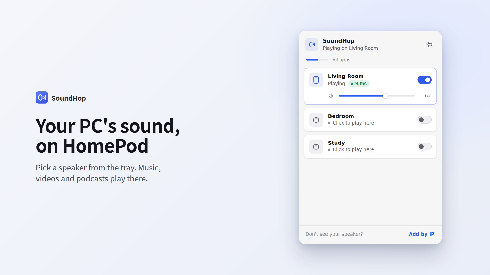

Your PC's sound,
on HomePod.
Pick a speaker from the Windows tray, and your music, videos and podcasts play there. No cables, no extra hardware.
Get it from Microsoft Store
Lives in the tray
Opens like the Windows volume panel. Reconnects by itself and can start with Windows.
Low delay, visible
Uses the shortest buffer AirPlay allows, with a live green / yellow / red connection indicator.
Clear fixes
When a HomePod refuses access or the firewall blocks it, SoundHop tells you exactly what to change.
Private by design
No account, no ads, no tracking. Audio stays on your local network.